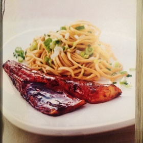

sunflower oil
4 cod filets (~6.5 oz each) (or tuna/chicken)
1/2 lb egg noodles
1 tsp sesame oil
2 tbsp chives choppped
3 small white onions minced (petits onions)
Terriyaki sauce:
2.5 floz mirin or dry xeres
2.5 floz soy sauce
75 floz chicken broth
For the teriyaki sauce, in a saucepan, bring to boil the mirin (or xeres). Let it simmer for 2 min to reduce it by half. Add the soy sauce and broth, stir and remove from heat.
Put an aluminum sheet in a skillet/grill. Oil it slightly and put the cod on it. Distemper the cod with teriyaki sauce and cook it for 5 to 6 min under a oven's grill. Sprinkle with sauce regularly.
Meanwhile, cook the noodles in salted water. Dry them and add sesame oil, chives and the small onions.
Serve the cod filet on a bed of hot noodles. If there is sauce remaining, pour it on the fish.